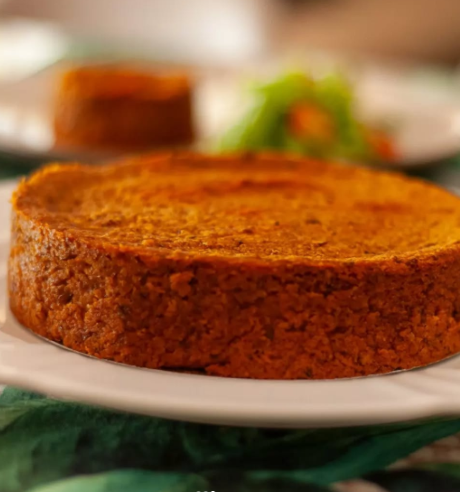

receita

Torta de Lentilha com Batata
jantar üçù
Ingredientes
- 2 dentes de alho picados
- 1 cebola picada
- 1 xícara de lentilha demolhada e escorrida
- 1/2 colher de café de sementes de cominho amassadas no pilão
- 1 colher de café de açafrão em pó
- 2 folhas de louro
- 2 colheres de sopa de azeite
- 1 lata de tomates pelados
- 1/2 xícara de água
- 200ml de leite de coco
- Sal a gosto
- Pimenta da Jamaica moída a gosto
Modo de preparo
- Cozinhe as batatas até que fiquem bem macias.
- Em um pilão coloque o cominho, o urucum e uma colher de café de sal. Triture bem.
- Na panela adicione as folhas de louro, os temperos do pilão. Quando aquecer e os aromas forem liberados, é hora de adicionar o azeite, a lentilha, a água, o alho e o vinagre.
- Cozinhar até que a lentilha fique macia e toda água evapore.
- Na própria panela ou em uma tigela junte a batata cozida, já escorrida, com a lentilha para amassar.
- Amassei com mixer de m√£o, mas se voc√™ n√£o tiver pode ser com um amassador de batata. üçÉDica: tire as folhas de louro da lentilha antes de amassar.
- Adicione pimenta da jamaica e corrija o sal se for necessário.
- Coloque tudo em uma assadeira untada com azeite, usei uma redonda de 17 cm de diâmetro e fundo removível.
- Dica! É mais prático fazer em um travessa de vidro que você possa servir nela mesma, sem precisar desinformar. Fica a seu critério!
- Antes de colocar no forno: üêà o pulo da gata √© adicionar um fio generoso de azeite, cobrindo o topo da torta. Ao assar, esse azeite vai criar uma casquinha crocante em toda bordinha, fica delicioso.
- Asse por 30 min a 180 graus ou até que esteja douradinha.
0 curtidas